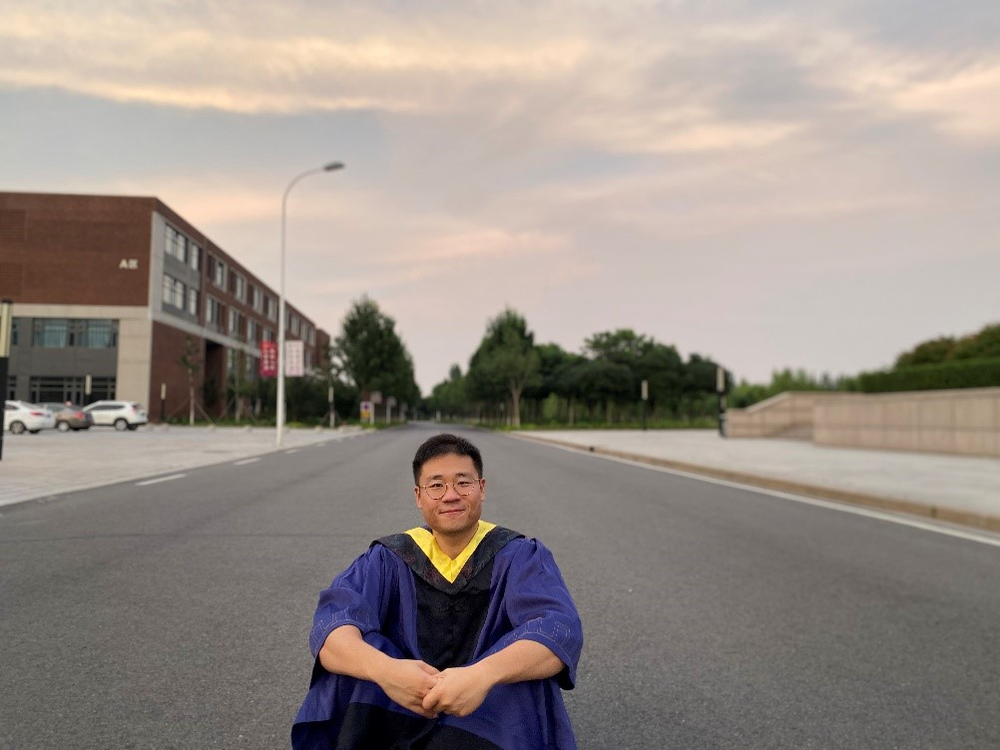

- 南开大学-同砚路38号
- kevinwangwei@nankai.edu.cn
- liyue80@nankai.edu.cn
-
姓 名： 周向春
性 别： 男
毕业入职：华为
所学专业：计算机科学与技术
研究方向：计算机视觉与强化学习
个人简介：2017-2020年于南开大学计算机学院硕士研究生在读
实验室工作： 主要工作有CV项目与相关论文发表，尝试将CV与强化学习技术结合，发表CCF-C论文一篇（ISCAS2020）；研究DCGAN生成工业数据集，发表电磁计算国际会议一篇（CEFC2020）
 姓 名： 王闯
性 别： 男
毕业入职：南开大学学生工作部
所学专业：计算机科学与技术
研究方向：生成对抗网络GAN
个人简介：2017-2020年于南开大学计算机学院硕士研究生在读
实验室工作： 负责生成对抗网络方向的科研任务
姓 名： 吕凌锋
性 别： 男
毕业入职：阿里健康
所学专业：计算机技术
研究方向：工程开发
个人简介：2018-2020年于南开大学计算机学院硕士研究生在读
实验室工作： 负责开发土壤样本库管理系统、农科监测点位智能替换系统等
姓 名： 孙艺宁
性 别： 女
毕业入职：天津经济开发区国际学校
所学专业：计算机技术
研究方向：数据分析
个人简介：2018-2020年于南开大学计算机学院硕士研究生在读
实验室工作： 负责实验室数据分析相关工作
姓 名： 赵晓宇
性 别： 女
毕业入职：宁波银行
所学专业：计算机技术
研究方向：图像处理
个人简介：2018-2020年于南开大学计算机学院硕士研究生在读
实验室工作： 负责与医院合作的图像数据处理与分析
姓 名： 马若雨
性 别： 男
毕业入职：360企业安全
所学专业：软件工程
研究方向：机器学习与数据挖掘
个人简介：2016-2019年于南开大学计算机学院硕士研究生在读
实验室工作： 负责与环科学院合作的数据分析与算法设计，基于机器学习与深度学习设计并实现了污染物插值算法，PDLEN源解析模型，自反馈LSTM源解析模型
姓 名： 刘国勇
性 别： 男
毕业入职：网易游戏
所学专业：计算机技术
研究方向：工程开发
个人简介：2017-2019年于南开大学计算机学院研究生在读。
实验室工作：负责开发南开大学动态源解析实时计算软件、德州扑克机器博弈平台、土壤样本库管理系统、农科字符串加密软件等
姓 名： 李生启
性 别： 男
毕业入职：百度垂直搜索部
所学专业：计算机技术
研究方向：数据分析
个人简介：2017-2019年于南开大学计算机学院研究生在读。
实验室工作： 农科稻米镉是否超标的分类研究，KNNCMB源解析软件，聚类研究等
姓 名： 梁杨可欣
性 别： 男
毕业入职：百度
所学专业：软件工程
研究方向：算法
个人简介：2015-2018年于南开大学计算机与控制工程学院研究生在读。
其他信息： 实验室工作：以3D CNN为基础的视频处理研究，主要以视频的多标签分类和渐变镜头检测为主。
姓 名： 李秀健
性 别： 男
毕业入职：北京百度度秘事业部
所学专业：软件工程
研究方向：算法&数据分析
个人简介：2015-2018年于南开大学计算机与控制工程学院研究生在读。
其他信息：实验室工作：农业部稻米重金属镉超标预测，大气单颗粒污染物源谱划分，大气单颗粒物相似源解析项目等
姓 名： 高原
性 别： 女
毕业入职：渤海银行股份有限公司
所学专业：软件工程
研究方向：算法
个人简介：2015-2018于南开大学计算机与控制工程学院研究生在读。
其他信息：实验室工作：中医经验药方的研究及其应用，主要包含基于中医经验药方的用药规律，和药对基因映射的剪枝研究，最后是名老中医专家学术经验传承系统的完善。

姓 名： 王逸楠
性 别： 男
毕业入职：googe gmail intelligence team
所学专业：计算机
研究方向：图像处理
个人简介：2010-2014于南开大学计算机与控制工程学院研究生在读。
其他信息：

姓 名： 孙凯悦
性 别： 女
毕业入职：Dropbox
所学专业：计算机
研究方向：计算机辅助医疗
个人简介：2011-2015于南开大学计算机与控制工程学院研究生在读。
其他信息：
姓 名： 谢贵阳
性 别： 男
毕业入职：美团打车
所学专业：计算机
研究方向：算法&大数据开发
个人简介：2012-2016于南开大学计算机与控制工程学院研究生在读。
其他信息：
姓 名： 陈伟荣
性 别： 男
毕业入职：蚂蚁金服基础技术部
所学专业：计算机
研究方向：计算机视觉
个人简介：2013-2015于南开大学计算机与控制工程学院研究生在读。
其他信息：
姓 名： 张大鹏
性 别： 男
毕业入职：新浪微博
所学专业：计算机
研究方向：视频检测与检索
个人简介：2014-2017于南开大学计算机与控制工程学院研究生在读。
其他信息：
姓 名： 徐恒鹏
性 别： 男
毕业入职：博士在读
所学专业：计算机
研究方向：图像识别
个人简介：2013-2015于南开大学计算机与控制工程学院研究生在读。
其他信息：
姓 名： 张昱堃
性 别： 男
毕业入职：小米研发
所学专业：计算机
研究方向：智能信息处理
个人简介：2014-2016于南开大学计算机与控制工程学院研究生在读。
其他信息：
姓 名： 张竹
性 别： 女
毕业入职：上海期货信息技术有限公司
所学专业：计算机
研究方向：图像处理
个人简介：2014-2016于南开大学计算机与控制工程学院研究生在读。
其他信息：

姓 名： 王迪
性 别： 男
毕业入职：联通软件研究院（项目经理）
所学专业：计算机
研究方向：图像识别
个人简介：2013-2015于南开大学计算机与控制工程学院研究生在读。
其他信息：
姓 名： 薛斌
性 别： 男
毕业入职：渤海银行
所学专业：计算机
研究方向：数据分析
个人简介：2015-2017于南开大学计算机与控制工程学院研究生在读。
其他信息：
姓 名： 李航
性 别： 男
毕业入职：国家电网运城供电公司信息通信维护
所学专业：计算机
研究方向：数据分析
个人简介：2015-2017于南开大学计算机与控制工程学院研究生在读。
其他信息：